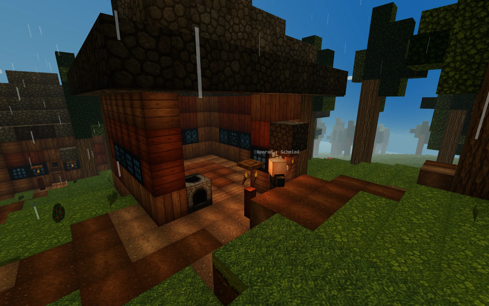
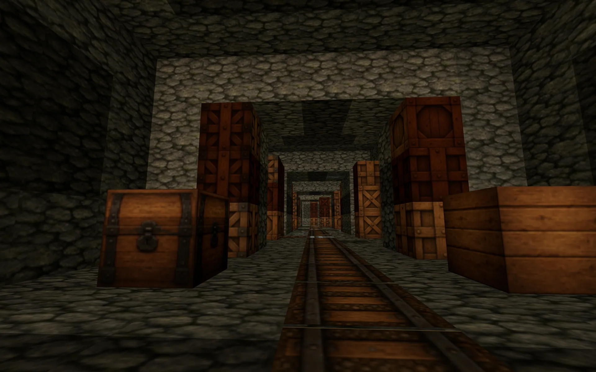

01 · Steuerung
Bewegen, schauen, handeln.
Auf Touch-Geräten erscheinen passende Bildschirmsteuerungen automatisch.
02 · Der erste Tag
Vier Ziele vor Sonnenuntergang.
- Schlage Holz und verarbeite es im 2×2-Feld zu Brettern.
- Baue Stöcke und anschließend eine Werkbank für größere Rezepte.
- Sammle Stein, stelle Werkzeug her und sichere Nahrung.
- Errichte einen beleuchteten Schutzraum oder suche ein Dorf.

03 · Basisrezepte
Aus wenig wird Ausrüstung.
Der Rezept-Bereich im Spiel zeigt dir weitere Werkzeuge, Waffen und Baumaterialien.
04 · Welt & Dörfer
Folge Spuren, nicht nur dem Horizont.
Dörfer verbinden dich mit Schmieden, Bauern, Händlern und Bibliothekaren. Gespräche, Handel und Quests bauen Vertrauen auf und können besondere Rezepte freischalten. Unter Tage führen Minen mit Schienen tiefer; Dungeons verlangen bessere Vorbereitung.

05 · Spielstände
Deine Welt bleibt deine.
Im Pausenmenü kannst du Spielstände anlegen und laden. Export und Import eignen sich als Sicherung oder für den Wechsel auf ein anderes Gerät. Der Browser-Speicher gehört zum jeweiligen Browserprofil und sollte nicht als einzige langfristige Sicherung dienen.
Bereit für den ersten Tag?
Starte direkt im Browser und arbeite die ersten vier Ziele ab.
Jetzt spielen →